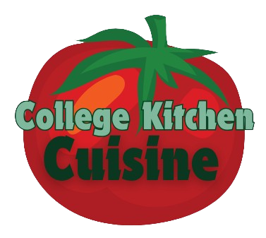
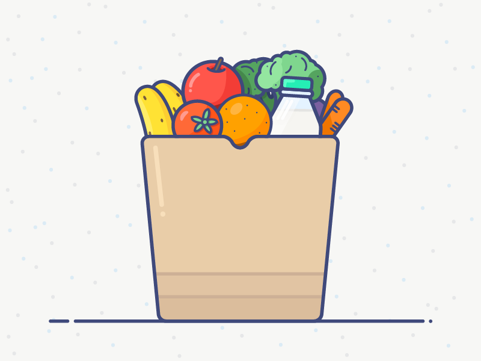
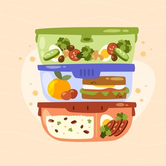

Kitchen Essentials

List of basic kitchen tools and equipment that are essential for easy cooking in a college dorm or apartment
- Can opener
- Paring knife
- Cutting board
- A medium-sized saucepan and skillet
- A set of basic cooking utensils (spatula, wooden spoon, ladle, tongs, etc.)
- Storage containers
Shopping Tips

Advice on budgeting for groceries and shopping smart to maximize value and minimize expenses
- Plan your meals for the week ahead before grocery shopping
- Create and stick to a shopping list
- Buy non-perishable items in bulk
- Buy store-brand items
- Purchase frozen fruits and vegetables
Time-Saving Techniques

Hacks for efficient meal preparation and cooking
- Use pre-cut vegetables
- Utilize a slow cooker for easy meals
- Meal prep on your least busy days
- Clean dishes/utensils/cutting boards as you cook
- Prepare one-pot meals